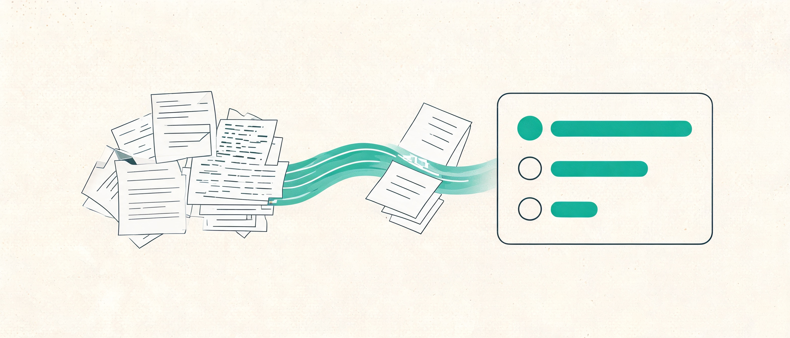

Jev：不聊天的模型，只做判断题
大模型本来是给人写文章看的；可当你的代码需要一个判断——「这单该派给谁」「这个 bug 严重吗」「客户急不急」——用生成文本的模型就像让作家去填答题卡。Jev 是 TypeSafe 的旗舰模型、第一个「System One 模型」：你交一份材料、一组类型化的问题，它返回程序能直接 if、排序、路由的答案，外加一套概率。这本手册把它的理念、三种题型、校准原理和工程玩法全部拆开。
Jev 是什么 —— 不聊天，只做判断题
先把术语说清楚，再打比方：Jev 是 TypeSafe 公司的旗舰模型，也是第一个「System One 模型」。System One 模型是专门给软件用的判断模型——读一份材料，回答一组类型化的问题，直接返回答案和概率分布。它不生成文本，你的代码也就不需要解析文本。
先立三个名词，后面全书都用：TypeSafe 是做这类模型的公司；Jev 是它家的旗舰模型（API 里叫 jev-latest）；System One 是这类模型的类别名，出自心理学家卡尼曼《思考，快与慢》——System 1 是快而直觉的思考，System 2 是慢而缜密的推理。Jev 只做 System 1 的活儿：给足上下文后几秒内能下的判断；需要长链推理的事，交回给你的代码、通用大模型或者人。
再打比方（比喻跟在定义后面）：通用 LLM 像一位会写作的实习生——你问「这封投诉该给哪个组」，他回你一段漂亮的话，礼貌、周全，但你的程序还得从中抠出「billing」这个词。Jev 像一位专职阅卷老师——你递上卷子（材料）和评分标准（问题与选项），他直接填答题卡：选了哪项、每项多少概率、整体多大把握。没有客套话，没有格式漂移。
LLM 为「人读的文本」而生，塞进自动化流水线就得「生成 → 解析 → 祈祷不出格式错」。Jev 直接返回类型化答案 + 概率，代码可以分支、排序、路由，不用解析。
不写回复、不写代码、不解释推理。你通过「题型 + 选项 / 等级」定义答案空间，它只在里面作答。它也不是慢推理模型——那是 RLVR 路线的活儿（第 7 章）。
《思考，快与慢》：System 1 快而直觉，System 2 慢而缜密。Jev 是第一个 System One 模型——强调快、聚焦的判断，嵌在更大的工作流里当「秒级微判断层」。
选择题：choice + probabilities + confidence；打分题：score + legend + …；判断题：noul（0–1）。答案永远限定在你给的选项内，不会冒出选项外的值。
同一份输入，两种模型的活儿
分工感最直观的方式是看同一段客服工单分别交给两者。左边是通用 LLM 的典型输出形态（示意文案），右边是 Jev 对同一组问题的真实响应（取自官方快速上手示例）。注意右边每个字段你的代码都能直接用：choice 进 switch，score 比阈值，noul 进 if。
通用 LLM（生成文本）
Jev（类型化答案 + 概率）
| 通用 LLM / 聊天模型 | Jev（System One 模型） | |
|---|---|---|
| 为谁设计 | 人读的文本 | 软件直接消费的判断 |
| 输出 | 自由生成的散文（需要再解析） | 类型化答案 + 概率分布（无解析） |
| 答案空间 | 开放的，啥都可能说 | 你定义的：选项列表 / 有序等级 / 是否 |
| 拿手活 | 写作、解释、长推理 | 秒级、聚焦的单一判断（大量并行） |
| 不确定性 | 藏在语气里（常常过度自信） | 显式概率 + confidence（第 8 章） |
state、instructions 和等级描述时，生产环境建议用英文（第 2 章有细则）。自测 · 为什么说「让作家去填答题卡」是种错位？
一次调用长什么样 —— state 与 questions
Jev 的 API 只有一个核心动作：一份材料（state）+ 一组问题（questions），换回一组类型化答案。这一章把请求和响应的每个字段拆开，并给你一个可以亲手拼装的模拟台。
先说 state（大白话：你递给评审团的卷宗）。它是被评估的内容——一封客服消息、一段代码、或你应用的当前状态。三种形态都行：
| 形态 | 适合 | 例子 |
|---|---|---|
| 字符串 | 单段文本的简单场景 | "My card was charged twice." |
| 对象 | 多数请求：各部分有名字、关系清楚 | {"message": …, "order_id": "A-104"} |
| 数组 | 一连串消息或记录 | ["Hi", "My card was charged twice."] |
官方建议多数请求用对象：把工单、订单、政策这些相关材料放进同一个 state，让需要互相对照的判断在一次调用里完成。问题指向材料哪一段，就在 instructions 里用带反引号的点路径点名，比如 Does `ticket.messages[0].text` request a refund?——模型就知道该看哪块卷宗。
下面是官方快速上手的完整请求：一段 Stripe 连不上、客户在流失的工单，混着三种题型一次问完——
{
"state": "Hi, I've been trying to connect my Stripe account for 3 days and it keeps failing. I'm losing sales. Please help ASAP.",
"model": "jev-latest",
"questions": {
"department": {
"type": "choice",
"instructions": "Which team should handle this",
"criteria": {
"billing": "Payment or subscription issues",
"technical": "Bugs or integration problems",
"sales": "Pricing or account questions"
}
},
"frustration": {
"type": "score",
"instructions": "How frustrated the customer appears",
"criteria": [
"Calm, just stating facts",
"Frustrated but civil",
"Very angry, strong language"
]
},
"is_urgent": {
"type": "noul",
"instructions": "The message conveys urgency or time-sensitivity"
}
}
}四条上手路径
| 路径 | 怎么走 | 适合 |
|---|---|---|
| Playground | console.typesafe.ai/playground，登录后粘贴任意文字就能问 | 零代码试手感 |
| HTTP API | POST api.typesafe.ai/v1/systemone，Bearer token 鉴权 | 任何语言 |
| Python SDK | pip install typesafe-sdk（≥3.10），默认读 TYPESAFE_API_KEY、默认 jev-latest | 生产集成 |
| Agent skill | npx skills add typesafe-ai/skills --skill typesafe-ai（或 Claude Code 插件市场） | 让编码 agent 替你写集成 |
instructions、选项与等级描述建议用英文写，再用文档里的真实例句校准手感。自测 · 什么时候该把多份材料合并进一个 state？
三种题型 —— 选择、打分、判断
Jev 的答案空间只有三种形状，对应三种「题型」。选对题型，答案才能直接映射到代码动作——这是整个系统设计里你唯一要认真做的设计决策。
三种题型用大白话说：Choice 是选择题（从你给的固定清单里挑一个，清单里的选项之间没有顺序）；Score 是打分题（在你给的一串有序档位上找位置，可以落在两档之间）；Noul 是判断题（返回「是」的概率，0 到 1）。
| 题型 | 答案的形状 | 返回字段 | 代码里长成 |
|---|---|---|---|
| Choice 选择 | 固定选项里挑一个（无顺序） | choice + probabilities + confidence | switch / 路由表 |
| Score 打分 | 有序光谱上的位置 | score + legend + probabilities + confidence | 阈值判断 / 排序 |
| Noul 判断 | 是 / 否 | noul（0–1，无单独 confidence） | if |
底层其实是同一件事：一张概率表
三个题型看着不一样，底层共享同一条逻辑：模型心里握着一张概率表——「答案落在每个可能位置的可能性各是多少」。三种题型只是答案空间的形状不同：Choice 是一排并立的选项袋，Score 是一把带刻度的尺子，Noul 是一架只有两端的天平。返回值都是把这张表「读」出来的方式：
- Choice 把表原样给你（
probabilities），并帮你圈出最大的那格（choice）； - Score 把表沿刻度压成一个数（
score，即概率的加权平均，下面亲手拖一下就懂）； - Noul 的表只有两格——是、否——直接报「是」那格的读数（
noul）。
做完选择，这里给出推荐题型、返回字段与代码形态。
三个最常见的选题型错误
- 把「程度」塞进 Noul。问「这候选人 Python 强吗」得到 0.5——这不是「中等水平」，是「模型对是/否五五开」。测程度请用 Score（无经验 → 有点熟 → 日常用 → 精通）。
- 把「有顺序的档位」塞进 Choice。冷静/沮丧/愤怒明明是一条光谱，做成 Choice 就丢了「1.5 档」这种中间位置信息，也没法排序。
- 选项清单不设「都不像」。清单可能盖不住所有输入，加一个
other/none of the above，模型才有地方放「这题出错了」。
三种题型的答案还有一个共同的好性质：受限且独立。受限——答案永远在你给的选项/等级内，代码不用从散文里抠值；独立——一次调用里各个问题互看不见，加一问、删一问都不会改变其他答案。这个性质是第 9 章「放心并行提问」的前提。
自测 · 「这条评论是不是垃圾评论」和「这条评论有多像广告」分别该用什么题型？
if 的是 Noul，能映射到阈值/排序的是 Score。Choice —— 概率分布会说话
Choice 的答案里最值钱的不是选中的那一项，而是整张概率分布：它告诉你模型在犹豫什么、第二名是谁、这份犹豫值不值得你抄送一个团队。
Choice 的三个返回字段（大白话版）：choice 是填了哪个格（概率最高的选项）；probabilities 是每个格各分到多少把握（全部加起来等于 1）；confidence 是把分布的形状压成的一个数——分布越尖，把握越大；摊得越平，越拿不准。
看两组真实对比（取自官方文档的鞋店工单示例）。清晰的工单：尺码错了想换——returns 拿走全部概率，confidence 1.0。歧义的工单：晚了两周 + 尺码错了 + 卡上还有两笔扣款——returns 0.60 当选，但 billing 0.38 紧咬，confidence 掉到 0.39。注意：confidence 低不是说「答案错了」，而是「第二名不是噪音」。
department · probabilities + confidence
你的代码怎么走（真实官方示例逻辑）
把选项清单写好
- 给全，别给短名单。一个 Choice 最多 255 个选项，每个选项只花几个 token。团队列表、商品类目直接给全量，比先筛再问准得多。
- 描述的作用是「把选项彼此分开」。选项名 + 描述都会发给模型。名称自己能说明白时，描述可以写
null（官方 tone 例题就这么干）。 - 容易混淆的选项，升级成结构化对象。官方例子：
return_policy（能不能退、怎么退）vsreturn_status（退的货到哪了）——两个选项都会提到退货退款，于是各写what（管什么）、not_for(不管什么)、examples（例句），边界立刻清晰。
"return_topic": { "type": "choice", "instructions": { "question": "Which returns topic is the customer asking about?" }, "criteria": { "return_policy": { "what": "Whether and how an item can be returned", "not_for": "Progress of a return already sent", "examples": ["How long do I have to return an order?"] }, "return_status": { "what": "Progress of a return already sent", "not_for": "Whether and how an item can be returned", "examples": ["When will my refund be paid?"] } } }
字段名 what、not_for、examples 都不是 API 保留字——你自己起名，模型看得见字段名，起短而准的名字即可。要给深目录分类（几百个类目），官方做法是一层一层 Choice 走树，每层把子树当选项描述发给模型，让它在提交前「看见分支下有什么」。
自测 · department 返回 returns 0.60 / billing 0.38，你的路由代码除了派 returns 还该做什么？
notify(ticket, team)。0.38 的 billing 不是噪音，是「这个工单一半是账务问题」——让两个团队都知情，比硬选一个更稳。Score —— 等级设计的陷阱
Score 是三兄弟里最容易踩坑的：它的 criteria 是一串有序等级（2 到 10 档），而模型评估每一档的方式和你的直觉完全不同——不理解这一点，分数就会「不对劲」。
先建立直觉（第 3 章的概率翻译机可以亲手拖）：模型对每一档各押一份概率，像在 0、1、2 三个刻度上放砝码；返回的 score 就是这堆砝码的平衡点（重心）。官方例子里，0.70 押「有绕行」、0.30 押「无绕行」——重心停在 1×0.70 + 2×0.30 = 1.30，两档之间。所以小数分数不是什么「模型的犹豫值」，就是概率重量压出来的落点。四个返回字段这样分工：
score—— 重心落在刻度的哪里（0 到最高档号之间，含小数）；legend—— 把档号翻译回你写的描述；probabilities—— 每块砝码有多重（加起来 = 1）；confidence—— 砝码是集中还是摊开。0.70/0.30 这种「分裂」分布，confidence 就低（官方例子里是 0.54）。
官方做了一个对照实验，值得亲手玩一遍：同一份 bug 报告，三种等级写法，分数天差地别——
四个读数背后是四条设计经验：
- 纯数字是灾难。「Rate 0–2」加
["0","1","2"]：像素错位的报告从 0.0@1.0 掉到 0.57@0.35——模型没有东西可对照，只能瞎摊概率。 - 例子要像你的真实输入。「export fails in one browser but works in another」贴住 Safari 报告，confidence 0.54 → 0.90；换成无关例子（搜索坏但浏览分类还在）几乎不帮忙。
- 同一个 score 可能来自不同分布。1.0 可以是「全押 1 档」，也可能是「0 档 2 档各半」——含义完全不同。永远把
probabilities和confidence跟 score 一起读。 - 一问只测一个维度。等级写「准时、聪明、有经验」是三件事，输入高一项低一项就放不进光谱，confidence 掉、分数失义。拆成三个 Score（第 9 章组合）。
自测 · 为什么「比上一档更严重」「中等严重」都是坏等级描述？
Noul —— 一道判断题的概率
Noul 最简单也最容易被误读：它返回「是」的概率，一个 0 到 1 的数。会读这个数，你就掌握了系统里最便宜的「条件判断」。
用法定义清楚：Noul 评估一个单一的是非问题或陈述。把它的概率表想清楚就一通百通——这张表只有两格：是、否，加起来永远 = 1；noul 就是「是」那格的份额，读数方式天然直观：靠近 1 是强「是」，靠近 0 是强「否」，正中间 0.5 是两边一样重——「模型拿不准」，不是「中等程度」。措辞上让高概率 = 是，答案含义才不拧巴；也可以写成陈述句让模型判真伪（「客户在要求退款」≈ 1 表示为真）。
是非边界微妙时，可以加可选的 criteria，用 true / false 两段描述钉住边界。官方例题：「客户以前就这事联系过支持吗？」——true = 提到先前尝试/工单/问过；false = 没有任何先前联系的迹象。同一份「I have asked three times now. Can I please just talk to a real person?」返回 0.93。
工程上你多半会把 noul 阈值化成布尔：≥ 0.9 拦截、≤ 0.3 放行、中间走复核。但要记住它没有单独的 confidence——分布本身就只有一维，「拿不准」已经写在 0.5 里。需要「程度」时那是 Score 的领地；需要「几个类别」时是 Choice 的。
自测 · 「简历里提到分布式系统经验吗」和「候选人的系统设计水平如何」分别用什么？
为什么它的概率能信 —— RLCD 与校准
前六章一直在说「概率、概率」——凭什幺 Jev 说的 0.8 就真的八成会发生？答案在一个词：校准（calibration）。这一章讲 TypeSafe 为此走的第三条训练路线。
先大白话定义「校准」：模型报的概率长期对得上事实的发生频率。报 0.2 的事，一大批复测里真的约 20% 发生；报 0.8 的约 80% 发生。注意口径：校准是一群预测的统计性质，不保证任何单个答案正确——这正是第 8 章 confidence 路由存在的原因。
预训练之后的语言模型有三条「后训练」路线，目标函数完全不同：
| 路线 | 优化什么 | 造出了什么 | 副作用 |
|---|---|---|---|
| RLHF 人类反馈强化学习 | 人更喜欢读哪种回复 | 聊天机器人（InstructGPT / ChatGPT） | 谄媚、听起来自信的幻觉、mode dropping（分布收窄、别的说法被压掉） |
| RLVR 可验证奖励强化学习 | 答案能否被客观验证（数学、代码） | 推理模型 | 慢、贵 |
| RLCD 校准决策强化学习 | 概率与真实结果的对齐（TypeSafe 的路线） | 决策模型：返回判断 + 校准概率，不生成文本 | 不会聊天、不解释——故意的 |
一个有意思的传承：RLHF 的共同发明人之一 Diogo Almeida，正是 TypeSafe 的联合创始人——他造过「讨人喜欢的模型」，现在造「机器信得过的模型」。TypeSafe 的判断是：大规模自动化里约 99% 是机器对机器的交互，机器接口比聊天界面重要。他们称之为 Machine Native Intelligence：让 AI 拥有软件的性质——结构化、可靠、可观测、可测试、快、一致、便宜。
校准的模型（RLCD 目标）
过度自信的模型（示意）
if noul >= 0.9: 拦截 这样的代码，并且能预估误杀率 ≈ 10%。概率不可信时，任何阈值都是玄学。下一章就把这个思想落成完整的路由架构。为什么不用 RLHF 模型凑合做判断？官方给了两个理由：一是它奖励的是「人爱读」，与「机器可依赖」是两个目标——一段话可以写得让人信服，却不足以让程序无人值守地执行；二是偏好优化带来 mode dropping，输出分布收窄，潜力被压掉。RLHF 依然是聊天模型的好路线，只是生产自动化需要不同的目标函数。
自测 · 「校准」保证了单个答案正确吗？
confidence —— 什么时候自动干，什么时候交给人
校准给了你诚实的概率，confidence 给了你拒绝行动的勇气。这一章是把「我不知道」变成系统架构的一章。
定义先行：Choice 和 Score 的答案里都带 confidence（0–1），它是从 probability 分布的形状算出来的统计量——官方替你算好，最常见场景零成本。分布尖 = 高 confidence；摊平 = 低。Noul 没有 confidence，因为它的「拿不准」就写在 0.5 里。官方同时强调：这不是把你锁死在他们的定义里——完整 probabilities 都在响应里，你要别的度量自己算。
低 confidence 是有用的信号，不是失败。Choice 上它常意味着「没有哪个选项明显赢」；Score 上常意味着「等级重叠 / 问题测了不止一件事 / 材料不够」。官方给的起始模式是三档：
| confidence | 系统行为 | 例子 |
|---|---|---|
| 高 | 自动执行，不打扰人 | 清晰工单直接派组 |
| 中 | 谨慎：请用户确认 / 标记复核 / 先补材料 | 转账前多问一句 |
| 低 | 不行动：转人工、要求澄清、换系统兜底 | 歧义工单进人工分诊 |
关键工程观：阈值不是一个数，而是随风险缩放的一组数。官方示例——同一个「用户想干什么」的 Choice，查余额（只读、可恢复）低门槛放行；批准转账（破坏性）必须 confidence > 0.9 才自动走、否则先向用户求证；而 0.5 是全局地板：模型自己都说拿不准的，一律转人工。
自测 · 为什么查余额和批准转账不该共用一个 confidence 阈值？
组合拳 —— 并行提问、拆解与代码加权
单发的问题好写，系统的价值在组合。Jev 的组合学有三板斧：放心多问（并行）、拆开问（原子化）、代码里合（加权）。这一章把它们串成完整的工单优先级流水线。
第一板斧：放心多问
一次调用里的所有问题并行、彼此独立地评估——加问题几乎不增加响应时间，只多花问题本身的几个 token（便宜）。所以官方姿势是「可能用得上就都问」，答案用不用留给代码决定：工单不是退货就不看 severity，不是 shipping 就忽略 shipping_issue。这个模式官方叫 Speculative fan-out（投机型扇出）。实测口径：13 个问题合并成一次调用，比 13 次单问便宜 11.5 倍、快 9.6 倍，答案不变。上限是请求的 token 预算（state 和问题共享，约 32,000 tokens ≈ 15 万英文字符）。
第二板斧：拆开问
「工单优先级」这种复合判断别硬塞一个问题。官方拆法：严重度（3 档）、客户沮丧度（3 档）、报告质量（4 档）三个 Score 一起问。对官方那份「导出转圈、第三次来、附了步骤和浏览器版本」的工单，三个答案是 1.24@0.63、1.45@0.33、3.0@1.0——各自只测一个维度，各自可解释。
第三板斧：代码里合
三把尺子刻度不同（0–2、0–2、0–3），先归一化：各除以自己的最高档号，全部落到 0–1（0.62、0.725、1.0），再加权求和。权重是你的业务判断，写死在代码里：官方示例 0.6 × 严重度 + 0.3 × 沮丧度 + 0.1 × 报告质量 = 0.69。下个月老板说「客户情绪优先」，你改一个系数，不用碰任何提示词。
权重在代码里，改系数不改提示词。
什么时候才需要第二次请求
同请求内的问题互相独立——一个答案不会自动成为下一个问题的上下文。真有依赖时（代码必须拿到第一个答案才能：去取更多数据、决定 state 装什么、或挑下一个问题的选项），才发第二个请求。官方口径：两次请求是例外不是常态。三个真实例外：先粗排 182 个技能再取前三细评；先判断每行换行是否切断句子、再给拼出的块分类（块在第一问回答前根本不存在）；层级分类里用上一层的 Choice 决定下一层给哪些选项。
展开看参考答案
打开 console.typesafe.ai/playground，随便粘一段你身边的文字（邮件、评论、报错），加三个问题：一个判断题（急不急）、一个选择题（该给谁）、一个打分题（情绪几档）。看三个答案是不是一次全回来。
questions 对象里混三种 type 即可，全部并行返回。对照点：三档情绪的 Score 返回 0–2 之间的小数（如 1.035）；Choice 的 probabilities 给出每个选项的份额；Noul 只有一个 0–1 值。不需要 API key，Playground 登录即用。
展开看参考答案
拿你的工单/评论/简历流写问题清单：路由用 Choice（记得加 other）、程度用 Score（每档写成「什么情况下算这档」）、筛选用 Noul。把「可能用得上」的都列上——反正一次调用并行答，不用白不用。
检查三件事：① 每问只测一个维度，复合判断拆开（在代码里加权）；② Score 的 criteria 每档是情境画像而非程度词，不含「比上一档」式相对表述；③ Choice 易混选项用 {what, not_for, examples} 结构化。instructions 里用带反引号的字段路径指向 state 的具体位置。
展开看参考答案
① 判断题的 0.5 是「拿不准」，不是半分——测程度用打分题；② 每一档是单独送评的，模型不知道有编号也不知道邻居，所以等级必须写成具体场景；③ 组合判断的权重是代码里的系数，改优先级改数字，永远不用重写提示词。
① Noul 无 confidence，0.5 本身承载不确定性；Score 的中间值才有「程度」语义（概率加权档号）。② criteria 每档独立对照 state 评估，相对表述与裸数字都会让分布摊平（官方实验：0.0@1.0 → 0.57@0.35）。③ Composite scoring 模式：normalize（除以 len(criteria)-1）后加权，权重即业务策略，可测可版本化。
实战地图 —— 用例、模式、食谱与生态
题型只是零件，这一章是一张可点的地图：官方把用例按行业铺开、沉淀出四个架构模式、写了十八份带真实结果的 cookbook 食谱；社区这边 skill、SDK、复刻与实测也都已经有了。拿着你自己的业务对号入座。
先看社区把它玩成了什么样：十类高频用法
Jev 发布于 2026 年 9 月 15 日。响应速度官方口径 150ms 级、社区实测约 70–500ms（随 state 大小浮动）；输入 $0.042/Mtok、输出不计费——「一次判断不到一美分」是下面这些玩法共同的前提：判断便宜到可以每个 tick 都问、每封邮件都筛、每段上下文都过滤。下表整理自 awesome-jev 与社区实测帖（数字为发布者口径）：
| 玩法类别 | 它在判断什么 | 社区实测例子 |
|---|---|---|
| 分类与路由 | 文本/工单/日志分到固定标签；紧急程度、是否需要人工 | 客服邮件分诊、500 封邮件批量分类、税务 PDF 识别 |
| 动作选择 （Computer Use） | 读页面/桌面的结构化状态，选「点哪个元素、执行哪类操作」 | Browser Use 创始人用 Jev 订机票：苏黎世→伦敦 7.1 秒 / $0.0039，单步响应 ~70ms（X 上 180 万播放，完整实测视频）；macOS 桌面控制 |
| Agent 监督与护栏 | agent 跑没跑偏、工具调用安不安全、该停/重试/升级 | 漂移检测、危险工具调用拦截、完成度与卡死判断 |
| 代码与质量检查 | 给 PR/生成代码打风险分、选审查重点、判规范符合性 | 代码审查仪表盘、14 项 PR 风险检查、AI 生成代码评分 |
| 检索与过滤 | 片段相不相关、该不该进上下文、保留还是丢弃 | RAG 重排、记忆压缩（保留/删除）、网页去广告、自然语言过滤时间线 |
| 评分与评估 | 按量表给紧急度、严重度、质量、匹配度打分 | 广告卖点拆解、帖子潜力、标题与摘要筛选 |
| 实时控制与游戏 | 每个 tick 读结构化状态，选下一步动作 | Doom 演示、Super Mario（读模拟器 RAM）、国际象棋、无人机战术建议 |
| 交易与策略 | 根据行情/规则状态给买/卖/持有或风险判断 | 链上做市、对冲基金回测、实时下注决策 |
| 安全与合规 | 是否注入、是否违规、命令是否危险 | Prompt injection 检测、有害文本审核、shell 命令安全判断 |
| 模拟与群体决策 | 为大量实体并行判断「下一步意图」 | NPC 行为、大规模 3D agent 并行决策 |
这些玩法的公共形状，就是第 3 章那句「答案空间预先定义好」：动作清单、风险档位、保留/删除——全是选择题、打分题、判断题的排列组合。个别例子收录在 awesome-jev（链接见本章末社区动态）。
官方用例地图：五大类场景
官方的 用例地图（Example use cases）按行业列了二十来类用法。先抓它归纳的五大类——每一类都是「为什么非这种模型不可」的一个理由：
| 场景大类 | 一句话 |
|---|---|
| AI 自动化软件 | 代码掌管控制流，Jev 管语义判断——无人值守地跑一百万次 |
| 实时应用 | 官方口径 150ms 级响应：快过人类感知，可做游戏、可嵌进 UI |
| 大数据 AI Map Reduce | 便宜一个数量级之后，巨量语料的搜索、分类、特征提取才做得起 |
| 万能验证 | 验证另一个 AI 的输入、抽取、推理轨迹、工具调用——成本只要被检 LLM 调用的零头 |
| Harness 工程 | 让 agent 框架更聪明：模型路由、语义检索、错误检测、护栏 |
行业层各挑两个典型判断感受一下广度（完整清单见用例地图页）：客服（工单分类、紧急度/退款检测、路由到队列）、招聘（简历对照岗位标准打分、经验识别、不确定转人工）、销售线索（ICP 匹配、购买意向打分）、保险理赔（出险报告分类、欺诈信号、直通处理 vs 专家审核）、金融犯罪（交易叙事评估、跨名录实体对齐）、法务合规（合同分类、缺条款与违规声明检测）、电商（跨卖家目录归一、禁售与假货信号）、信任与安全（毒性/骚扰/诈骗审核，severity × confidence 定允许/警告/复核/封禁）、游戏（聊天审核、玩家挫败感打分、流失信号）、知识图谱（关系分类、记录间矛盾检测）。官方还给了十种「决策形状」速查——分类、检测、打分、路由、搜索、检索、排序、验证、ML 特征提取、结构化抽取——拆开看全是三种题型的排列组合。
四个架构模式
Patterns 页把常见做法沉淀成四个模式，本手册已经拆过三个，剩下那个是 agent 工程里最常用的总纲：
- Speculative fan-out 投机型扇出——可能用得上的问题一次全问（第 9 章三板斧之一）；
- Confidence-gated routing 置信度门控路由——答案告诉你是「什么」，confidence 告诉你「要不要动手」（第 8 章）；
- Composite scoring 复合打分——拆成原子分数、代码里加权（第 9 章优先级计算器）；
- Intent routing 意图路由——把每个请求分给最优处理者：确定性代码、专家 LLM，或人。
十八份 cookbook：带数字的实战食谱
每份 cookbook 都是可以跑起来的完整示例，多数带前后对比数字。建议先扫一遍标题，挑跟自己业务最近的两三份精读：
| 食谱 | 干什么的 |
|---|---|
| Parallel questions | 在 GDPR 维基条目上一次批量问 13 个监管问题，验证「合在一起问」更便宜更快且答案不变 |
| Re-ranking | 40 条法律查询：BM25 短名单重排后 top-1 命中 5% → 18%，top-10 命中 38% → 62% |
| Line-by-line search | GitHub 服务条款 218 行逐行语义搜索：一次 Choice 问题给 218 个行号打分 |
| Structure recovery | 丢掉格式的纯文本两步恢复成 Markdown：先拼行、再给每个块分类（第 9 章提过的真依赖例子） |
| Function calling | 自然语言交易请求 → 普通类型化函数调用：函数名与闭集参数都映射成问题 |
| Skill suggestion | 182 个 agent 技能里至多挑 1 个：第一问粗排，第二问细读前三并有权全拒 |
| Entity alignment | 两份啤酒目录 450 个候选对：一个 Score 包办「合并 / 不连 / 交人工」三决策，无需拟合阈值 |
| Classifying RAG passages | 给每段检索材料打分，决定谁有资格进回答模型——顺手拦下藏了 prompt injection 的段落 |
| Citation check | 引文对照原文：一个 Choice 判断引文语境是否支撑论断，confidence 不足就标人工复核 |
| LLM guardrails | LLLM 应用的进出双向筛查：越狱检测（Noul）+ 危害程度打分（Score），阈值决定放行/复核/拦截 |
| SDE cascade | 结构化抽取三段级联（小模型 → 验证 → 推理模型）：用零头的价格买到大模型的大部分质量 |
| Date extraction | 绝对与相对日期抽取：Jev 出零件、代码负责解析与校验 |
| Pre-parsed value extraction | 正则找候选邮箱/电话/金额，Jev 选中目标跨度，代码归一化成标准值 |
| Hierarchical classification | 专利 / 零售 / 生物医学 / 源码深层级分类：Choice 概率上跑并行 beam search |
| Autoresearch features | 自动提出问题 → 把文本变数值特征 → 用模型误差迭代训练下游 CatBoost 回归器 |
| Classification using confidence | SEC 年报分 75 个行业组：置信度不够就上报上一级门类，而不是硬猜 |
| Self-consistency: nouls | 不确定的概率转人工，同时底层 noul 值保持可见 |
| Self-consistency: choices | 审核决策加一个「不确定」出口，用标注一致性对账自动动作占比 |
Agent skill：让编码 agent 替你写集成
TypeSafe agent skill是一个即插即用的技能包（SKILL.md 直读），给 Claude Code、Codex 等编码 agent 补全题型、模式与最佳实践上下文。安装：
# Claude Code 插件市场 claude plugin marketplace add typesafe-ai/skills claude plugin install typesafe@typesafe-ai # 其他 agent（skills.sh，项目本地装，-g 全局） npx skills add typesafe-ai/skills --skill typesafe-ai
官方给的三个起手 prompt 值得直接抄：①「用 TypeSafe skill 扫一遍我的项目，找用语义判断替代脆弱解析的机会」；②「拿我导出的 TYPESAFE_API_KEY 跑些便宜实验，基于最有希望的结果提方案」；③「对照 cookbook 索引看我的代码里有没有类似模式可以重构」。官方经验还提醒：agent 不擅长写问题——问题与阈值收拢到一个文件里，和人一起迭代；以及如果你只想要「最好的选项」，直接取最高概率即可，不必处处上 confidence 阈值。
SDK 与价格账本
客户端两条路：Python SDK（pip install typesafe-sdk）与 JavaScript SDK（@typesafe-ai/sdk），都默认读 TYPESAFE_API_KEY、默认 jev-latest、失败自动退避重试。硬指标（models 页，2026-09）：
| 项 | 数值 / 口径 |
|---|---|
| 当前版本 | jev-1.13.0（jev-latest / jev-preview 别名都指向它；别名会随新版漂移，调过阈值就锁版本号） |
| 价格 | 输入 $42 / Btok（=$0.042 / Mtok）；输出 token 免费——因为它不生成文本 |
| 限速 | 250,000 tokens/s、1,200 请求/分钟（官方注明扩容期动态调整，超额返回 429） |
| 上下文 | 每请求 64k tokens：state 32k + 最长问题 32k（问题共享预算，第 9 章） |
| 定制方式 | 不做微调 / LoRA：同一套权重服务所有账号，领域知识放 state、边界写进 criteria |
| 数据 | 不用客户请求/响应训练；企业可零保留（ZDR） |
| 发布口径 | 官方发布博文：System One 形状的查询上比 frontier LLM 快 40–200×、便宜最高 400× |
社区动态：一周里的生态
Jev 发布才几天，社区已经有复刻、实测与吐槽。挑真实可点的：
- 热帖 · HN：Reverse-engineered Jev-like model（161 分）——社区逆向「一段文本 + N 个选项 → N 个概率」的做法；Reddit r/singularity 发布帖同步在吵
- 复刻与开源替代 · mini-jev（LLM 上本地实现）、open-alternative-jev（自己 GPU 上跑的开源替代）
- 实测 · dabit3/jev-experiments（Devin 搭的延迟测试）、lindfors.no 早鸟实测「半美分的校准判断」
- 第三方解读 · DataCamp：Jev 解读、flaviocopes 深潜（含 JS 示例）、geotoolbox 入门
- 随笔与视频 · 「Jev 是扑克桌上的鱼」（对适用边界的长文思考）、YouTube：Coding with the new TypeSafe AI JEV Model
- 汇总清单 · awesome-jev（社区项目、集成与讨论的持续收录）
自测 · 想清楚了再选 Jev：它和「用便宜 LLM 做分类」的边界在哪？
终极测验
五道题覆盖全部核心机制。答完每题立即出解析；4 题以上正确算出师。
参考资料
本手册的事实、示例与数字均整理自 TypeSafe 官方文档（2026-09 读到版本），交互组件为本页自制。
- 官方文档 · Introduction · Quick start · System One · State —— 第 1、2 章的主源
- 官方文档 · Primitives 总览 · Choice · Score · Noul · Advanced: structure —— 第 3~5、9 章的题型细节与全部实验数字
- 官方文档 · AI primer（RLCD 与校准） · Confidence —— 第 7、8 章的训练叙事与路由示例
- 官方入口 · Playground · API
POST api.typesafe.ai/v1/systemone· TypeSafe Manifesto（Machine Native Intelligence） · 发布博文：Introducing System One Models & Jev - 书 · 丹尼尔·卡尼曼《思考，快与慢》—— System One 命名出处
- 延伸 · 用例地图、patterns、18 份 cookbooks、models（定价/限速/语言支持）、agent skill 已在第 10 章展开索引；完整文档目录见 llms.txt，社区链接（HN、复刻、实测、第三方解读）同样收录在第 10 章
延伸阅读 · 本站相关手册
| 手册 | 关联点 |
|---|---|
| LLM 前缀缓存 | 省智能调用成本的两个互补机制：Jev 靠「一次调用并行多问」省请求数，前缀缓存靠复用已算过的前缀状态省计算 |
| Subagent vs 多 Agent | 编排层怎么分工；Jev 是编排体系里那层「秒级微判断」，慢推理与人兜底在别处 |
| GPU 与模型部署实战 | 模型 API 背后的推理与部署经济学——判断模型再快也要跑在算力账单上 |